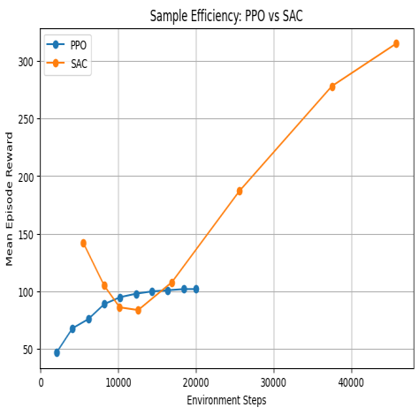

I work where perception meets control — where a model has to look at
the world and act on it before the next frame lands.
My focus is computer vision, mobile robotics, perception, and
control. The things I'm most proud of: a multi-object tracker
that follows two people walking around a room without losing track of
who's who, RTAB-Map running onboard a snake-inspired robot, and a
deep-RL racing agent that beat its classical baseline by
2× on F1TENTH.
The rest of my training fills in around that core — reinforcement
learning, classical control, manipulator robotics, biomechanics, and
human-robot interaction. (Yes, I built a Cozmo robot that plays
Rock-Paper-Scissors and trash-talks the loser.)
Before grad school I was a research intern at DRDL
Hyderabad working on actuator control. Outside the lab:
Formula 1, Marvel marathons, exploring Boston.
02 / Timeline
Education & experience.
Most recent first
Sep 2024 — May 2026
Master of Science, Robotics
Northeastern University · College of Engineering · Boston, MA
Concentration in Electrical and Computer Engineering. Coursework
spans perception, learning, estimation, and control — across both
classical and modern methods.
Coursework
Robotic Sensing & Navigation
EECE 5554 · Fall 2024
Control Systems Engineering
ME 5659 · Fall 2024
Mobile Robotics
EECE 5550 · Spring 2025
Robot Mechanics & Control
ME 5250 · Spring 2025
Human-Robot Interaction
CS 6983 · Fall 2025
Neuromechanical Simulation of Human Movement
ME 5374 · Fall 2025
Reinforcement Learning & Sequential Decision Making
CS 5180 · Spring 2026
Pattern Recognition & Computer Vision
CS 5330 · Spring 2026
Oct 2022 — Jan 2023
Research Intern
Defence Research and Development Laboratory (DRDL) · Hyderabad, India
Designed a state-feedback gain matrix for DC motor control,
optimizing damping ratio and natural frequency. Tuned parameters to
improve motor response time and operational efficiency by ~20%, with
a ~35% reduction in oscillations.
2019 — 2023
Bachelor of Technology, Electrical & Electronics Engineering
CVR College of Engineering · Hyderabad, India
Foundational training in electrical systems, control theory,
signals & systems, and embedded hardware — the groundwork for
a transition into robotics.
03 / Work
Major projects.
Final & capstone
001Spring 2026

CS 5180 · Reinforcement Learning
On-Policy vs Off-Policy Deep RL for Autonomous Racing.
with Kushwanth Vellanki
Systematic empirical comparison of PPO, SAC, and TD3
against classical baselines (Pure Pursuit, reactive LiDAR) in the
F1TENTH Gym simulator. Five evaluation axes: sample efficiency, peak
performance, multi-seed stability, generalization to unseen tracks,
and reward-shaping ablations.
GP-Guided MPPI for Navigation in Unknown Environments.
solo project
Implementation of a Gaussian Process-guided MPPI
controller. A Sparse GP occupancy model built from LiDAR estimates
both occupancy and uncertainty — high-variance regions become
subgoals that guide MPPI beyond its planning horizon, escaping
local-minima traps that hinder vanilla MPPI.
RTAB-Map SLAM Onboard COBRA — A Snake-Inspired Robot.
with H. Noyes, N. Rajhans, S. K. Athaluri
Deployed RTAB-Map on COBRA, an 11-joint sidewinding
robot. Stack: Intel RealSense D435i feeding a
Jetson Orin NX. Benchmarked odometry against
OptiTrack ground truth using Evo. Documented graceful
degradation during fast sidewinding gaits.
Real-Time Multi-Object Tracking with Custom Data Association.
with Kushwanth Vellanki
Tracking-by-detection pipeline built from scratch. YOLOv8n
provides per-frame detections; a custom Kalman Filter
predicts motion; the Hungarian algorithm performs
assignment. Supports both IoU and Euclidean cost matrices.
Within-subjects user study (N=24) evaluating how
robot personality modulates user perception during a synchronous
Rock-Paper-Scissors game with an Anki Cozmo. Custom Python pipeline
using MediaPipe Hands for real-time gesture
recognition. Three personality conditions.
Muscle-Driven Simulation of Human Stair Gait in OpenSim.
with Deelip Kumar Gummadidhala
End-to-end pipeline for muscle-driven simulation of stair ambulation
using OpenSim 4.5 and MATLAB. Processed kinematic
and kinetic data from the Darmstadt Stair Ambulation Dataset; ran
MocoInverse trajectory optimization on the gait2392
model. Validated against EMG.
Single-Axis Magnetic Levitation: State-Space Control Design.
with A. Mashhadireza, R. Suhail, H. A. Syed
Modeled a single-axis maglev system from Newton's laws and
electromagnetic equations into state-space form.
Implemented PID and full-state-feedback controllers in MATLAB /
Simulink. Stability analyzed via Lyapunov functions
and controllability matrices.
Real-time C++ OpenCV filter pipeline. Custom video effects, image processing fundamentals, separable filters and color manipulation across live webcam feed.
Image retrieval using hand-crafted features (histograms, texture) and deep ResNet18 embeddings. Compared classical and learned representations for similarity search.
Built a real-time 2D object recognition pipeline: thresholding, morphological cleaning, region segmentation, feature extraction, and a custom classifier with persistent training database.
Intrinsic camera calibration via checkerboard, then real-time AR overlays with four extensions including animated 3D scenes and keyboard-controlled virtual objects.
CNN baseline on MNIST, fine-tuning a Vision Transformer, transfer learning to Greek letters, plus extensions with Gabor filter feature extraction and pretrained models.
Wrote a custom ROS 2 device driver to parse $GPGGA NMEA messages from a GPS puck. Established the data infrastructure for downstream localization projects.
Collected 5-hour stationary IMU data; computed Allan Deviation to extract White Noise (N), Rate Random Walk (K), and Bias Instability (B). Validated against VN-100 datasheet.
Calibrated magnetometer (hard / soft iron correction); fused yaw from gyroscope and magnetometer; estimated forward velocity from accelerometer. EKF-based dead reckoning trajectory.
Calibrated phone camera intrinsics; built a feature-based photomosaicing pipeline using SIFT/ORB matching and homography estimation across overlapping panoramic views.
Built a Simscape Multibody bipedal Spring-Loaded Inverted Pendulum runner; ran nominal simulation; constructed return maps to characterize controller stability.
Tuned a muscle-driven walking model via CMA-ES optimization across multiple gait scenarios (crouch, high-step). Foundation for the OpenSim final project.
Implemented gaze behavior on a simulated robot with a 10Hz control loop. Designed the interaction logic for natural head movements and attention shifts during conversation.
Graduating May 2026. Open to full-time roles across
the robotics and applied-ML stack — and equally interested in
collaborations, contract work, and research conversations.